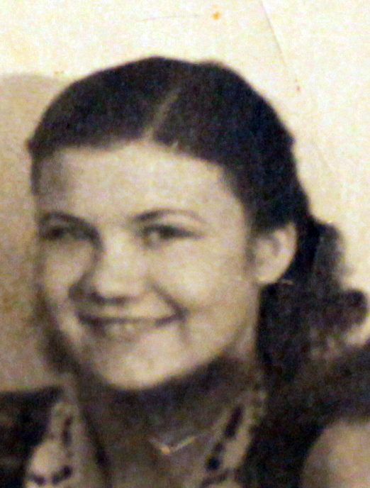

Продолжительность жизни: 79
Отец: Саулевич Василий Артемович (13.01.1911 - 13.01.1950)
Мать: Саулевич (Герилович) Варвара Федоровна (18.12.1910 - 24.12.1985)
Брат: Саулевич Иван Васильевич (29.01.1930 - 11.02.2013)
Брат: Саулевич Юрий Васильевич (26.05.1938 - 02.12.1983)
Сестра: Васильева (Саулевич) Надежда Васильевна (24.04.1947)
Муж: Цепков Николай (1935 - 1975)
Дочь: Башкирева (Цепкова) Алла Николаевна (17.12.1958)
Сын: Цепков Александр Николаевич (17.10.1962 - 07.04.2002)
Родилась: 06.06.1936. Отец: Саулевич Василий Артемович. Мать: Саулевич (Герилович) Варвара Федоровна.
Вышла замуж. Муж: Цепков Николай.
Родилась дочь: Башкирева (Цепкова) Алла Николаевна, 17.12.1958. Отец: Цепков Николай.
Родился сын: Цепков Александр Николаевич, 17.10.1962. Отец: Цепков Николай.
Умерла: 25.04.2016. Причина смерти: БА.
. |